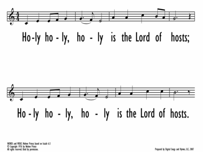

|
|
【聖哉！萬軍之耶和華】 |
|
[ Holy is the Lord of Hosts ] |
|
|

|
|
|
|
|

-
https://hymnary.org/media/fetch/104377
-
"Holy, holy, holy, is the Lord of
hosts"
0966
Holy, holy, holy is the Lord of hosts (Prince)
Prince, Nolene
［曲作者］
https://hymnary.org/person/Prince_N

Nolene Prince earned a bachelor's degree
in music, specializing in singing, and after teaching school music also attended
Bible college. After the loss of their two babies, the Princes rewrote this old
story in modern English to share with others the encouragement they received
from its revelations. They live in Melbourne and have three married children and
nine grandchildren.